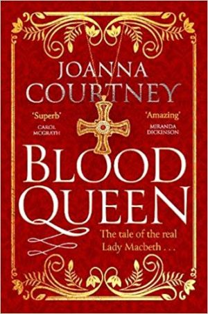

These are from my early days as a writer.
Please now find me on my Anna Stuart Instagram account.
Break out the tartan – it’s Burn’s Night!
Break out the tartan, stab a haggis and pour yourself a wee dram – this weekend it’s time to celebrate all things Scottish. I’m not sure why poor St Andrew got booted down the calendar in favour of Rabbie Burns (St Patrick gets all the Irish glory after all!) but if nothing else we have to thank the great poet for giving us a chance to cast off the gloom of January and have a party, Celtic style!
It’s a bit of a cliché, there’s no denying it, but maybe that’s our approach to Scotland full stop? Politics and rugby aside, we tend to look at the most northerly of the united kingdoms through slightly misty eyes – the highlands and islands, the lochs and glens, the mists and the heather, the faeries and the Loch Ness Monster. The Celts are, we intrinsically feel, a more ancient, more mythical race than the somehow more solid English. They are just a little bit other.
The truth is, however, that the Celts are actually the indigenous people of these isles. If anyone is ‘other’, it’s the Anglo-Saxon English – essentially Danes – who pushed them out to the edges. And it’s there that the Cornish and the Welsh, the Scottish and the Irish have been free to haunt the mists of legend and to rejoice in so doing. Myths after all are what root us as social animals within our land.
 The thing with myths, though, is that they can often also obscure truths and nowhere is this clearer than in the story of Macbeth. The ‘Scottish play’ is so shrouded in myth itself that, even today, actors are reluctant to speak its name out loud for fear of a curse. It’s the only one of Shakespeare’s plays to be explicitly set in Scotland and was, of course, done so to curry favour with James I, newly arrived from over the border. King James also had a particular preoccupation with witches and as Shakespeare was never a man to miss a convenient trend, the Scottish king became inextricably bound up with the supernatural.
The thing with myths, though, is that they can often also obscure truths and nowhere is this clearer than in the story of Macbeth. The ‘Scottish play’ is so shrouded in myth itself that, even today, actors are reluctant to speak its name out loud for fear of a curse. It’s the only one of Shakespeare’s plays to be explicitly set in Scotland and was, of course, done so to curry favour with James I, newly arrived from over the border. King James also had a particular preoccupation with witches and as Shakespeare was never a man to miss a convenient trend, the Scottish king became inextricably bound up with the supernatural.
But this wasn’t the biggest injustice that Shakespeare did to King Macbeth and his wife. Oh no! Shakespeare (or rather his source, Ralph Holinshead, the final writer in a long line of chroniclers who snowballed Macbeth’s story in increasingly lurid ways) managed to turn a royal couple who ruled Scotland legally and fairly for around 17 highly prosperous years into a pair of murderous usurpers who got their dirty hands on the throne for just a few dark and even insane weeks!
 It’s a hell of a trick and I suspect that he only got away with it because it was about a Scottish king. Not a real king. Not an English king! You don’t catch Shakespeare messing with Henry IV or Henry V, save to pop highly noble speeches into their mouths! But, then Scotland is, you know, other. . .
It’s a hell of a trick and I suspect that he only got away with it because it was about a Scottish king. Not a real king. Not an English king! You don’t catch Shakespeare messing with Henry IV or Henry V, save to pop highly noble speeches into their mouths! But, then Scotland is, you know, other. . .
So this weekend, if you are raising a wee dram of Scottish water in a toast, spare a thought for Macbeth and Lady Macbeth – noble, honest and highly effective rulers who, out of a lurid Jacobean taste for dark Celtic myths, became demonised into the murderous pair we know today. In their Shakespearean incarnations they are almost as fictitious as Nessie herself.
Slàinte!

Blood Queen – the REAL story of Lady Macbeth is available to buy now as ebook, audio and paperback.
BUY NOW